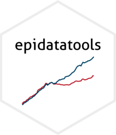

Deprecated IPUMS download functions
Source:R/ipums_micro_deprecated.R
ipums_micro_deprecated.Rd![[Deprecated]](figures/lifecycle-deprecated.svg)
These functions were renamed in epidatatools 2.0.0 to match the package's other
data functions, such as get_bls() and get_fred():
dl_ipums_micro()is nowget_ipums_micro()dl_ipums_acs1()is nowget_ipums_acs1()dl_ipums_asec()is nowget_ipums_asec()dl_ipums_cps()is nowget_ipums_cps()
Usage
dl_ipums_micro(extract)
dl_ipums_acs1(years = NULL, variables, description = NULL, ...)
dl_ipums_asec(years = NULL, variables, description = NULL, ...)
dl_ipums_cps(months = NULL, variables, description = NULL, ...)Arguments
- extract
an IPUMS microdata extract as defined by
ipumsr::define_extract_micro()- years
a vector of years
- variables
a vector of variable names, or a list of detailed variable specifications as created by
ipumsr::var_spec()- description
description for the extract
- ...
arguments passed to
ipumsr::define_extract_micro()other than collection, description, samples, variables- months
a vector of dates representing months of CPS samples.